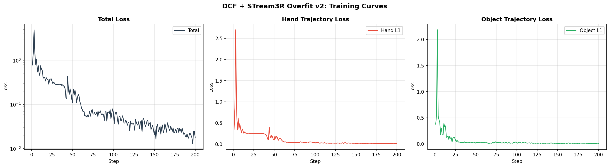
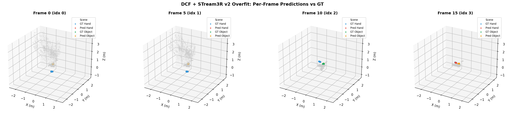
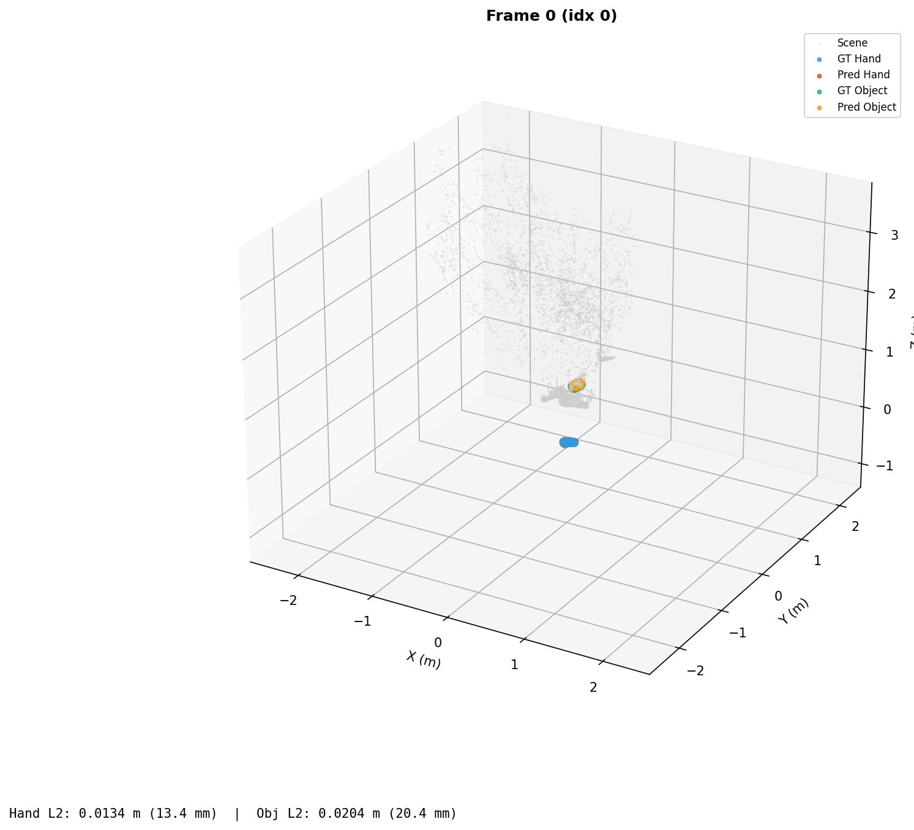
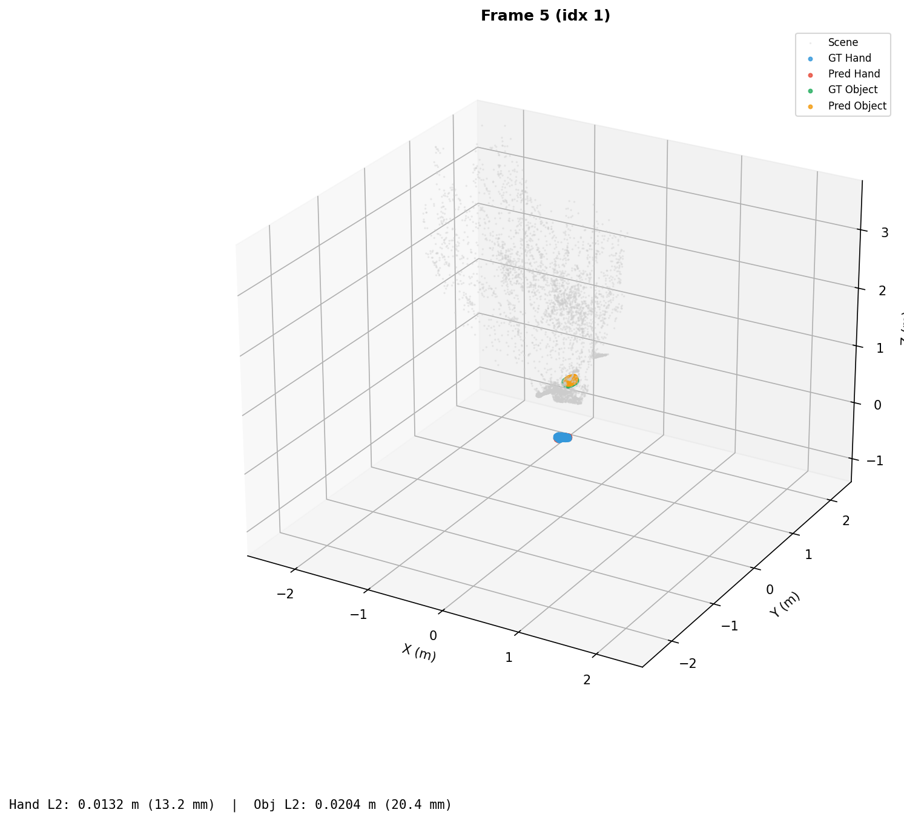
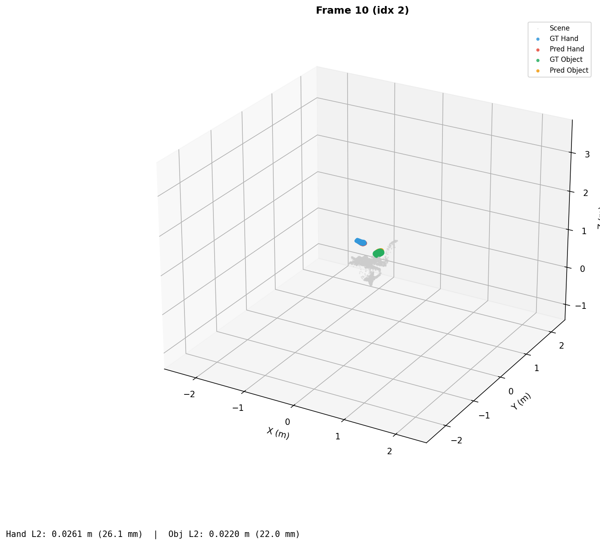
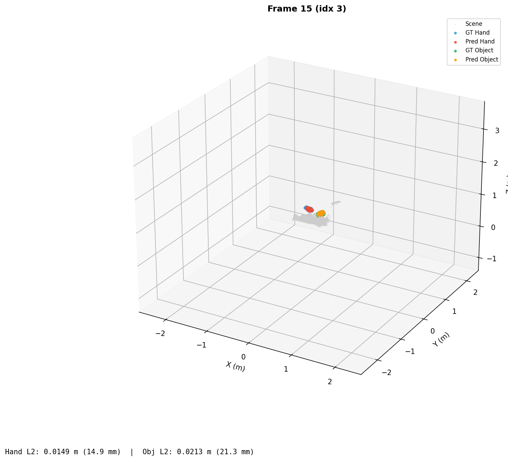
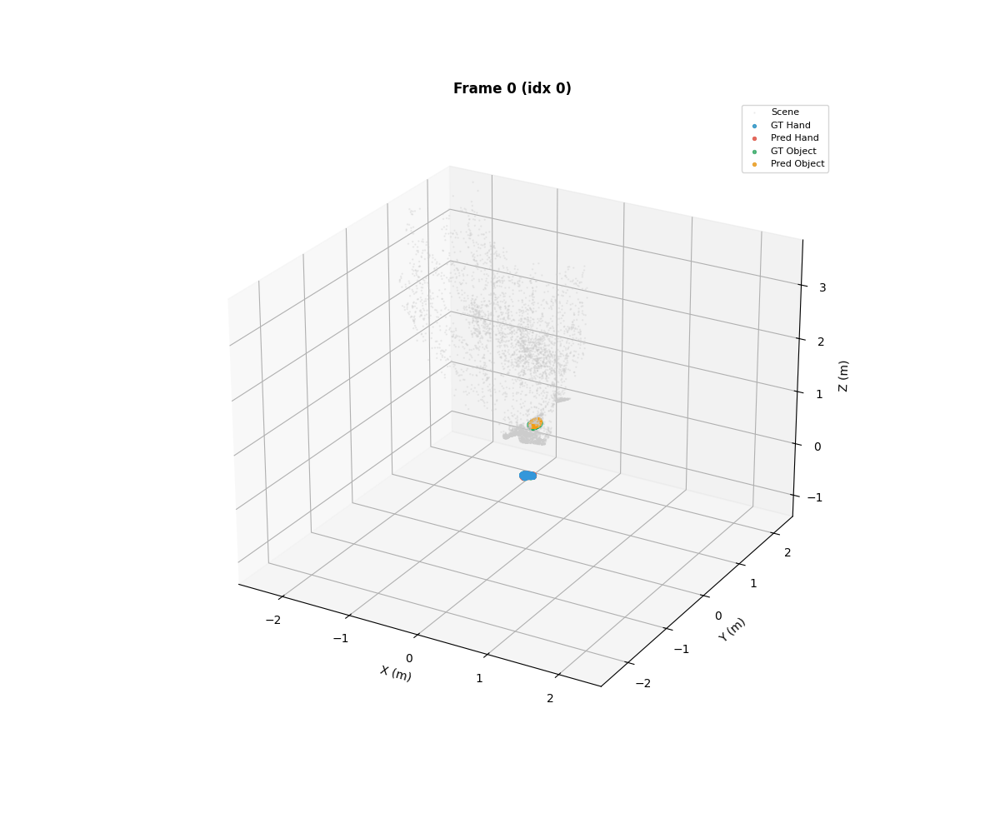

FIX GT now in camera space (not DexYCB-w). Camera space = first-frame camera = STream3R world for a static camera. Previous experiments supplied GT in a world-frame that differed from the STream3R encoder's canonical frame, causing systematic offset in the supervision signal.
FIX Per-frame forward pass (not sequence-level with averaged GT). Each frame is now processed independently, ensuring the loss gradient reflects per-frame prediction error rather than an aggregated average that masked frame-level failures.
FIX DCFBranch head_input_dim=1024 (matches aggregator extra token dim, not 2*embed_dim).
The aggregator injects extra tokens at the global block output dimension (1024), not at the
concatenated scene-head input size (2048). Correcting this mismatch prevented a silent projection error
in the trajectory and contact heads.
| Metric | Initial | Final | Best |
|---|---|---|---|
| Total loss | 0.777 | 0.018 | — |
| Hand L1 | 0.336 | 0.0085 | 8.5 mm |
| Object L1 | 0.378 | 0.0091 | 9.1 mm |
| Frame | Hand L2 (mm) | Object L2 (mm) |
|---|---|---|
| 0 | 13.4 | 20.4 |
| 1 | 13.2 | 20.4 |
| 2 | 26.1 | 22.0 |
| 3 | 14.9 | 21.3 |

Three-panel loss curve over 200 optimization steps: total loss (log scale), hand L1, and object L1. Both hand and object trajectory losses converge steadily, with total loss dropping from 0.777 to 0.018.

Side-by-side comparison of ground truth (blue/green) and predicted (red/orange) hand and object point clouds across all 4 frames in camera space. Scene point cloud is shown in the background for spatial context.

Frame 0 — Hand L2: 13.4 mm, Object L2: 20.4 mm

Frame 1 — Hand L2: 13.2 mm, Object L2: 20.4 mm

Frame 2 — Hand L2: 26.1 mm, Object L2: 22.0 mm

Frame 3 — Hand L2: 14.9 mm, Object L2: 21.3 mm

Animated GIF showing predicted vs ground-truth hand and object point trajectories across the 4-frame DexYCB clip, with background scene point cloud from STream3R.
| Module | Status | Params |
|---|---|---|
STream3R encoder (patch_embed + frame_blocks) |
frozen | ~603M |
STream3R decoder (global_blocks) |
optimized | ~302M |
| DCF hand point encoder | optimized | random init |
| DCF object point encoder | optimized | random init |
| DCF hand trajectory head | optimized | random init |
| DCF object trajectory head | optimized | random init |
| DCF contact head | optimized | random init |
| Scene heads (point, camera, depth) | frozen | — |
FINDING Extra tokens from aggregator are at embed_dim=1024, not 2*embed_dim.
Scene heads receive a 2048-dim input (frame + global token concat), but DCF extra tokens are injected
only through the global blocks at 1024. This means the two head families operate on different-dimensional
feature slices. Keeping them separate avoids projection dimension bugs.
FINDING Per-frame forward passes avoid OOM. Running 8 frames in a single batch with DPT heads causes an out-of-memory error on the current GPU. Processing 4 frames × 1 frame per pass fits within memory and produces stable gradients. Gradient accumulation across frames works correctly.
FINDING Hand predictions show 13–26 mm L2 error after overfit. Object ~20 mm. These residuals are non-trivial for a 200-step overfit and suggest room for improvement. NLF-style barycentric surface sampling with MANO LBS supervision (Phase 1b) is expected to provide denser, more informative gradient signal and reduce per-point error.
| Priority | Task |
|---|---|
| P0 | NLF-style query points: barycentric surface sampling + MANO LBS supervision |
| P0 | Multi-frame generalization test (train on frames 0–3, test on frames 4–7) |
| P1 | Add 2D reprojection loss |
| P1 | Progressive contact loss activation |
Generated by HOI3R experiment tracking pipeline. Commit 39c3f04 on branch feat/dcf.